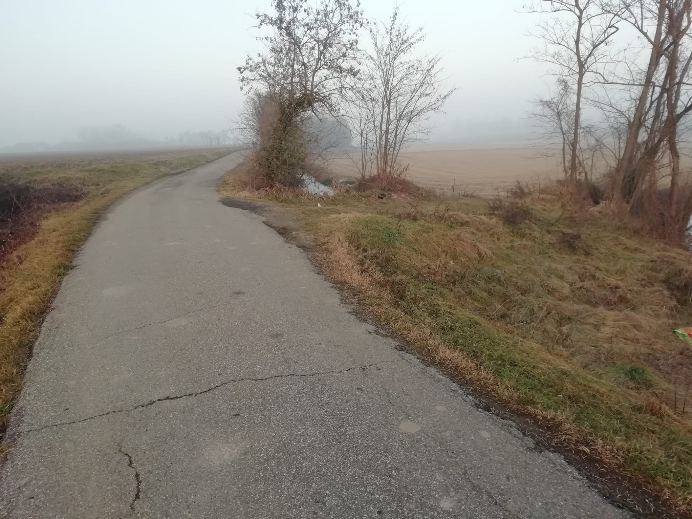
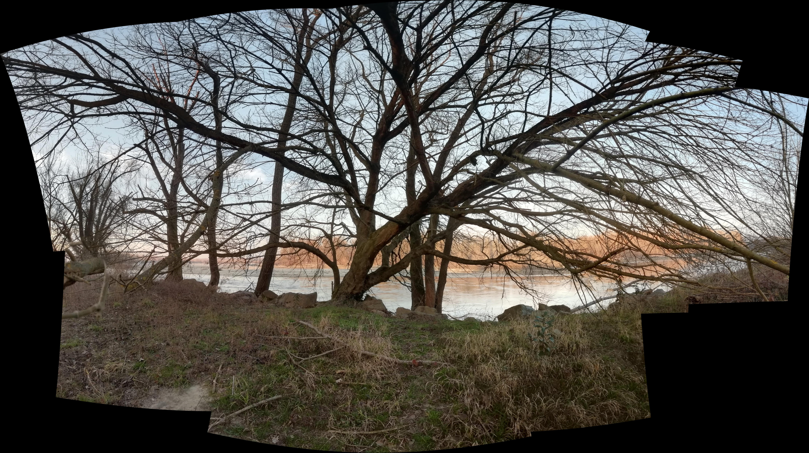
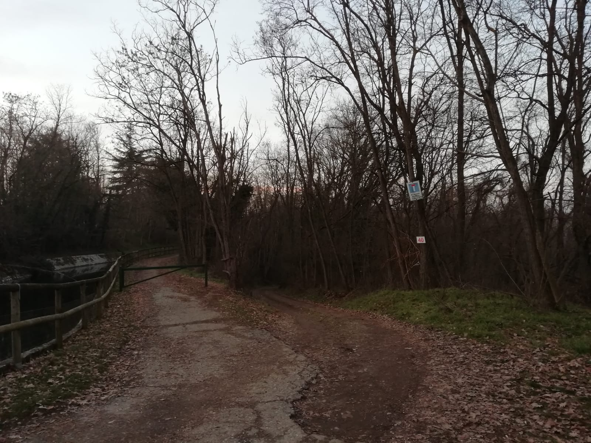

<!DOCTYPE html>
<head>
    <meta http-equiv="content-type" content="text/html; charset=UTF-8" />

        <script>
            L_NO_TOUCH = false;
            L_DISABLE_3D = false;
        </script>

    <style>html, body {width: 100%;height: 100%;margin: 0;padding: 0;}</style>
    <style>#map {position:absolute;top:0;bottom:0;right:0;left:0;}</style>
    <script src="https://cdn.jsdelivr.net/npm/leaflet@1.6.0/dist/leaflet.js"></script>
    <script src="https://code.jquery.com/jquery-1.12.4.min.js"></script>
    <script src="https://maxcdn.bootstrapcdn.com/bootstrap/3.2.0/js/bootstrap.min.js"></script>
    <script src="https://cdnjs.cloudflare.com/ajax/libs/Leaflet.awesome-markers/2.0.2/leaflet.awesome-markers.js"></script>
    <link rel="stylesheet" href="https://cdn.jsdelivr.net/npm/leaflet@1.6.0/dist/leaflet.css"/>
    <link rel="stylesheet" href="https://maxcdn.bootstrapcdn.com/bootstrap/3.2.0/css/bootstrap.min.css"/>
    <link rel="stylesheet" href="https://maxcdn.bootstrapcdn.com/bootstrap/3.2.0/css/bootstrap-theme.min.css"/>
    <link rel="stylesheet" href="https://maxcdn.bootstrapcdn.com/font-awesome/4.6.3/css/font-awesome.min.css"/>
    <link rel="stylesheet" href="https://cdnjs.cloudflare.com/ajax/libs/Leaflet.awesome-markers/2.0.2/leaflet.awesome-markers.css"/>
    <link rel="stylesheet" href="https://cdn.jsdelivr.net/gh/python-visualization/folium/folium/templates/leaflet.awesome.rotate.min.css"/>

            <meta name="viewport" content="width=device-width,
                initial-scale=1.0, maximum-scale=1.0, user-scalable=no" />
            <style>
                #map_f453044c21374568b0bdb25d102870ea {
                    position: relative;
                    width: 100.0%;
                    height: 100.0%;
                    left: 0.0%;
                    top: 0.0%;
                }
            </style>

</head>
<body>

            <div class="folium-map" id="map_f453044c21374568b0bdb25d102870ea" ></div>

</body>
<script>

            var map_f453044c21374568b0bdb25d102870ea = L.map(
                "map_f453044c21374568b0bdb25d102870ea",
                {
                    center: [45.3169681, 8.857812],
                    crs: L.CRS.EPSG3857,
                    maxBounds: [[45.279, 8.81], [45.4, 8.92]],
                    zoom: 14,
                    zoomControl: true,
                    preferCanvas: false,
                }
            );


            var tile_layer_3f005d298c2b43529fd09632f1827b17 = L.tileLayer(
                "https://{s}.tile.openstreetmap.org/{z}/{x}/{y}.png",
                {"attribution": "Data by \u0026copy; \u003ca href=\"http://openstreetmap.org\"\u003eOpenStreetMap\u003c/a\u003e, under \u003ca href=\"http://www.openstreetmap.org/copyright\"\u003eODbL\u003c/a\u003e.", "detectRetina": false, "maxNativeZoom": 18, "maxZoom": 18, "minZoom": 14, "noWrap": false, "opacity": 1, "subdomains": "abc", "tms": false}
            ).addTo(map_f453044c21374568b0bdb25d102870ea);


            var marker_38c9f54d9d0845f085c38785e6ca855b = L.marker(
                [45.3230625, 8.850245651],
                {}
            ).addTo(map_f453044c21374568b0bdb25d102870ea);


        var custom_icon_d0ab88a623b249b78c5ab0b823d50f11 = L.icon({"iconSize": [30, 30], "iconUrl": "https://emojipedia-us.s3.dualstack.us-west-1.amazonaws.com/thumbs/120/whatsapp/314/speaker-low-volume_1f508.png"});
        marker_38c9f54d9d0845f085c38785e6ca855b.setIcon(custom_icon_d0ab88a623b249b78c5ab0b823d50f11);


        var popup_984b5532bdf04861a8f9d1e041bcb6de = L.popup({"maxWidth": "270"});


            var html_878199625eb240479b01b524d5c0577c = $(`<div id="html_878199625eb240479b01b524d5c0577c" style="width: 100.0%; height: 100.0%;">                      <h1 style = "font-size: 30px;"><b>Pizzeria</b></h1>                       <br>                               PLACEHOLDER                      <br><br>                       <i>Guido                                         <audio id="audio_VIALE_MONTEGRAPPA_PIZZERIA" loop>                      <source src="dati/VIALE_MONTEGRAPPA_PIZZERIA/pizzeria.mp3" type="audio/mpeg">                      </audio>                      </div>`)[0];
            popup_984b5532bdf04861a8f9d1e041bcb6de.setContent(html_878199625eb240479b01b524d5c0577c);


        marker_38c9f54d9d0845f085c38785e6ca855b.bindPopup(popup_984b5532bdf04861a8f9d1e041bcb6de)
marker_38c9f54d9d0845f085c38785e6ca855b.on('click', function (e) {this.openPopup(); document.getElementById('audio_VIALE_MONTEGRAPPA_PIZZERIA').play();});
        ;


            var marker_3c158874528f417381f9d3ab120029cf = L.marker(
                [45.31211904, 8.860001045],
                {}
            ).addTo(map_f453044c21374568b0bdb25d102870ea);


        var custom_icon_4ccedcca295848bba76801c6d601f765 = L.icon({"iconSize": [30, 30], "iconUrl": "https://emojipedia-us.s3.dualstack.us-west-1.amazonaws.com/thumbs/120/whatsapp/314/speaker-low-volume_1f508.png"});
        marker_3c158874528f417381f9d3ab120029cf.setIcon(custom_icon_4ccedcca295848bba76801c6d601f765);


        var popup_14be347f474247ed89b2f0d70ebd9b3e = L.popup({"maxWidth": "270"});


            var html_5aebe357dd9841b1934e45a39ff0e46a = $(`<div id="html_5aebe357dd9841b1934e45a39ff0e46a" style="width: 100.0%; height: 100.0%;">                      <h1 style = "font-size: 30px;"><b>Giacchetta Canale</b></h1>                       <br>                               PLACEHOLDER                      <br><br>                       <i>Guido                                         <audio id="audio_GIACCHETTA_CANALE" loop>                      <source src="dati/GIACCHETTA_CANALE/ZOOM0027.mp3" type="audio/mpeg">                      </audio>                      </div>`)[0];
            popup_14be347f474247ed89b2f0d70ebd9b3e.setContent(html_5aebe357dd9841b1934e45a39ff0e46a);


        marker_3c158874528f417381f9d3ab120029cf.bindPopup(popup_14be347f474247ed89b2f0d70ebd9b3e)
marker_3c158874528f417381f9d3ab120029cf.on('click', function (e) {this.openPopup(); document.getElementById('audio_GIACCHETTA_CANALE').play();});
        ;


            var marker_d87a50ca7ee249eb9a5c62cb0734242f = L.marker(
                [45.3064081, 8.866924562],
                {}
            ).addTo(map_f453044c21374568b0bdb25d102870ea);


        var custom_icon_3b7375998f714c3f8a0e5fa3f2aab4f1 = L.icon({"iconSize": [30, 30], "iconUrl": "https://emojipedia-us.s3.dualstack.us-west-1.amazonaws.com/thumbs/120/whatsapp/314/speaker-low-volume_1f508.png"});
        marker_d87a50ca7ee249eb9a5c62cb0734242f.setIcon(custom_icon_3b7375998f714c3f8a0e5fa3f2aab4f1);


        var popup_5848b793adf648ce8cc97ff9a4b0ffe6 = L.popup({"maxWidth": "270"});


            var html_bd345547120549e7b7ef451df0277919 = $(`<div id="html_bd345547120549e7b7ef451df0277919" style="width: 100.0%; height: 100.0%;">                      <h1 style = "font-size: 30px;"><b>Via de chirico Canale Pioggia</b></h1>                       <br>                               PLACEHOLDER                      <br><br>                       <i>Guido                                         <audio id="audio_VIA_DE_CHIRICO_CANALE_v2" loop>                      <source src="dati/VIA_DE_CHIRICO_CANALE_v2/ZOOM0029.mp3" type="audio/mpeg">                      </audio>                      </div>`)[0];
            popup_5848b793adf648ce8cc97ff9a4b0ffe6.setContent(html_bd345547120549e7b7ef451df0277919);


        marker_d87a50ca7ee249eb9a5c62cb0734242f.bindPopup(popup_5848b793adf648ce8cc97ff9a4b0ffe6)
marker_d87a50ca7ee249eb9a5c62cb0734242f.on('click', function (e) {this.openPopup(); document.getElementById('audio_VIA_DE_CHIRICO_CANALE_v2').play();});
        ;


            var marker_3c159134389e46a6b7d1735a1a3a139d = L.marker(
                [45.30644102, 8.889899845],
                {}
            ).addTo(map_f453044c21374568b0bdb25d102870ea);


        var custom_icon_4a40b49463fa491fac5419cfa4d6e589 = L.icon({"iconSize": [30, 30], "iconUrl": "https://emojipedia-us.s3.dualstack.us-west-1.amazonaws.com/thumbs/120/whatsapp/314/speaker-low-volume_1f508.png"});
        marker_3c159134389e46a6b7d1735a1a3a139d.setIcon(custom_icon_4a40b49463fa491fac5419cfa4d6e589);


        var popup_fc50d1e4d74d4e80981c310ded305f98 = L.popup({"maxWidth": "270"});


            var html_439179f6f6f84ebd8075856058296ffb = $(`<div id="html_439179f6f6f84ebd8075856058296ffb" style="width: 100.0%; height: 100.0%;">                      <h1 style = "font-size: 30px;"><b>Strada per laghi di santa marta</b></h1>                       <br>                               PLACEHOLDER                      <br><br>                       <i>Guido                                         <audio id="audio_AGRITURISMO_COLDIRETTI" loop>                      <source src="dati/AGRITURISMO_COLDIRETTI/ZOOM0025.mp3" type="audio/mpeg">                      </audio>                      </div>`)[0];
            popup_fc50d1e4d74d4e80981c310ded305f98.setContent(html_439179f6f6f84ebd8075856058296ffb);


        marker_3c159134389e46a6b7d1735a1a3a139d.bindPopup(popup_fc50d1e4d74d4e80981c310ded305f98)
marker_3c159134389e46a6b7d1735a1a3a139d.on('click', function (e) {this.openPopup(); document.getElementById('audio_AGRITURISMO_COLDIRETTI').play();});
        ;


            var marker_b265e815a033485381668cc83994cbd9 = L.marker(
                [45.29917137, 8.905742693],
                {}
            ).addTo(map_f453044c21374568b0bdb25d102870ea);


        var custom_icon_fc7b97fb8f8b4e0ea63b92cdafcdd4b5 = L.icon({"iconSize": [30, 30], "iconUrl": "https://emojipedia-us.s3.dualstack.us-west-1.amazonaws.com/thumbs/120/whatsapp/314/speaker-low-volume_1f508.png"});
        marker_b265e815a033485381668cc83994cbd9.setIcon(custom_icon_fc7b97fb8f8b4e0ea63b92cdafcdd4b5);


        var popup_29ea29f8dcdb47a7a8e8113579e380e2 = L.popup({"maxWidth": "270"});


            var html_40c11b8b043a4d4cbfff98fc21a622b6 = $(`<div id="html_40c11b8b043a4d4cbfff98fc21a622b6" style="width: 100.0%; height: 100.0%;">                      <h1 style = "font-size: 30px;"><b>Laghetto dei piccoli</b></h1>                       <br>                               PLACEHOLDER                      <br><br>                       <i>Guido                                         <audio id="audio_LAGHETTO_DEI_PICCOLI" loop>                      <source src="dati/LAGHETTO_DEI_PICCOLI/ZOOM0033.mp3" type="audio/mpeg">                      </audio>                      </div>`)[0];
            popup_29ea29f8dcdb47a7a8e8113579e380e2.setContent(html_40c11b8b043a4d4cbfff98fc21a622b6);


        marker_b265e815a033485381668cc83994cbd9.bindPopup(popup_29ea29f8dcdb47a7a8e8113579e380e2)
marker_b265e815a033485381668cc83994cbd9.on('click', function (e) {this.openPopup(); document.getElementById('audio_LAGHETTO_DEI_PICCOLI').play();});
        ;


            var marker_20f9528ee9e24f2999808604a654d143 = L.marker(
                [45.31246512, 8.883821165],
                {}
            ).addTo(map_f453044c21374568b0bdb25d102870ea);


        var custom_icon_97d6616263ae4f2ab17e543b04555d01 = L.icon({"iconSize": [30, 30], "iconUrl": "https://emojipedia-us.s3.dualstack.us-west-1.amazonaws.com/thumbs/120/whatsapp/314/speaker-low-volume_1f508.png"});
        marker_20f9528ee9e24f2999808604a654d143.setIcon(custom_icon_97d6616263ae4f2ab17e543b04555d01);


        var popup_8070551f2eff48e9b421b25b3d21117a = L.popup({"maxWidth": "270"});


            var html_f2406414e29b4675b910e2bb2c377092 = $(`<div id="html_f2406414e29b4675b910e2bb2c377092" style="width: 100.0%; height: 100.0%;">                      <h1 style = "font-size: 30px;"><b>Miciopolis</b></h1>                       <br>                               PLACEHOLDER                      <br><br>                       <i>Guido                                         <audio id="audio_MICIOPOLIS" loop>                      <source src="dati/MICIOPOLIS/ZOOM0022.mp3" type="audio/mpeg">                      </audio>                      </div>`)[0];
            popup_8070551f2eff48e9b421b25b3d21117a.setContent(html_f2406414e29b4675b910e2bb2c377092);


        marker_20f9528ee9e24f2999808604a654d143.bindPopup(popup_8070551f2eff48e9b421b25b3d21117a)
marker_20f9528ee9e24f2999808604a654d143.on('click', function (e) {this.openPopup(); document.getElementById('audio_MICIOPOLIS').play();});
        ;


            var marker_4040ce40cde444539f5e20ed5e4144b4 = L.marker(
                [45.30433837, 8.883231356],
                {}
            ).addTo(map_f453044c21374568b0bdb25d102870ea);


        var custom_icon_bfca18f7f0994a31a399c5d80d4a843c = L.icon({"iconSize": [30, 30], "iconUrl": "https://emojipedia-us.s3.dualstack.us-west-1.amazonaws.com/thumbs/120/whatsapp/314/speaker-low-volume_1f508.png"});
        marker_4040ce40cde444539f5e20ed5e4144b4.setIcon(custom_icon_bfca18f7f0994a31a399c5d80d4a843c);


        var popup_df1a5c81174e4ecf8bdd603eb28aa394 = L.popup({"maxWidth": "270"});


            var html_04bff1c69aef462a9222d82812a89743 = $(`<div id="html_04bff1c69aef462a9222d82812a89743" style="width: 100.0%; height: 100.0%;">                      <h1 style = "font-size: 30px;"><b>Strada per la Sforzesca</b></h1>                                             <br><br>                               PLACEHOLDER                      <br><br>                       <i>Guido                                         <audio id="audio_STRADA_REBUFFI" loop>                      <source src="dati/STRADA_REBUFFI/ZOOM0024.mp3" type="audio/mpeg">                      </audio>                      </div>`)[0];
            popup_df1a5c81174e4ecf8bdd603eb28aa394.setContent(html_04bff1c69aef462a9222d82812a89743);


        marker_4040ce40cde444539f5e20ed5e4144b4.bindPopup(popup_df1a5c81174e4ecf8bdd603eb28aa394)
marker_4040ce40cde444539f5e20ed5e4144b4.on('click', function (e) {this.openPopup(); document.getElementById('audio_STRADA_REBUFFI').play();});
        ;


            var marker_5eb587408f974992905abe685b3bc961 = L.marker(
                [45.29236968, 8.884778005],
                {}
            ).addTo(map_f453044c21374568b0bdb25d102870ea);


        var custom_icon_c38537ae636b4d9a8e2fbfcbbc71c442 = L.icon({"iconSize": [30, 30], "iconUrl": "https://emojipedia-us.s3.dualstack.us-west-1.amazonaws.com/thumbs/120/whatsapp/314/speaker-low-volume_1f508.png"});
        marker_5eb587408f974992905abe685b3bc961.setIcon(custom_icon_c38537ae636b4d9a8e2fbfcbbc71c442);


        var popup_54c8fc1c2e454471a274d1c0add2a7d6 = L.popup({"maxWidth": "270"});


            var html_a86b4f6ba2004e7ea5d4daea8b6499de = $(`<div id="html_a86b4f6ba2004e7ea5d4daea8b6499de" style="width: 100.0%; height: 100.0%;">                      <h1 style = "font-size: 30px;"><b>Cimitero musicale</b></h1>                                             <br><br>                               Mi ringrazia. Provo a suonare live sotto il suo suggerimento insieme ad altri amici.<br />Non sapendo suonare mi concentro timidamente sul Re. Rinuncio e chiudo il piano.<br />Il sottofondo è musica ambient e sono attorniato dal mio datore di lavoro.                      <br><br>                       <i>Guido                                         <audio id="audio_STRADA_REBUFFI_v3" loop>                      <source src="dati/STRADA_REBUFFI_v3/ZOOM0028.mp3" type="audio/mpeg">                      </audio>                      </div>`)[0];
            popup_54c8fc1c2e454471a274d1c0add2a7d6.setContent(html_a86b4f6ba2004e7ea5d4daea8b6499de);


        marker_5eb587408f974992905abe685b3bc961.bindPopup(popup_54c8fc1c2e454471a274d1c0add2a7d6)
marker_5eb587408f974992905abe685b3bc961.on('click', function (e) {this.openPopup(); document.getElementById('audio_STRADA_REBUFFI_v3').play();});
        ;


            var marker_b0c343bcaaff419294840e090ab96507 = L.marker(
                [45.34084406, 8.867725439],
                {}
            ).addTo(map_f453044c21374568b0bdb25d102870ea);


        var custom_icon_704602f90620440b8030b8a73766a44c = L.icon({"iconSize": [30, 30], "iconUrl": "https://emojipedia-us.s3.dualstack.us-west-1.amazonaws.com/thumbs/120/whatsapp/314/speaker-low-volume_1f508.png"});
        marker_b0c343bcaaff419294840e090ab96507.setIcon(custom_icon_704602f90620440b8030b8a73766a44c);


        var popup_1a82321eaf6a46249cc0404d3180311b = L.popup({"maxWidth": "270"});


            var html_fc3937a09dc249218e9646986197b58b = $(`<div id="html_fc3937a09dc249218e9646986197b58b" style="width: 100.0%; height: 100.0%;">                      <h1 style = "font-size: 30px;"><b>Rave a Ticino</b></h1>                                             <br><br>                               PLACEHOLDER                      <br><br>                       <i>Guido                                         <audio id="audio_RAVE_TISIN_v1" loop>                      <source src="dati/RAVE_TISIN_v1/ZOOM0025.mp3" type="audio/mpeg">                      </audio>                      </div>`)[0];
            popup_1a82321eaf6a46249cc0404d3180311b.setContent(html_fc3937a09dc249218e9646986197b58b);


        marker_b0c343bcaaff419294840e090ab96507.bindPopup(popup_1a82321eaf6a46249cc0404d3180311b)
marker_b0c343bcaaff419294840e090ab96507.on('click', function (e) {this.openPopup(); document.getElementById('audio_RAVE_TISIN_v1').play();});
        ;


            var marker_a2970ff555784002a59188dfc2f6deff = L.marker(
                [45.34220987, 8.865593442],
                {}
            ).addTo(map_f453044c21374568b0bdb25d102870ea);


        var custom_icon_17ccf48d70884d3c9dee80bbe1b57602 = L.icon({"iconSize": [30, 30], "iconUrl": "https://emojipedia-us.s3.dualstack.us-west-1.amazonaws.com/thumbs/120/whatsapp/314/speaker-low-volume_1f508.png"});
        marker_a2970ff555784002a59188dfc2f6deff.setIcon(custom_icon_17ccf48d70884d3c9dee80bbe1b57602);


        var popup_c94da6a8da3647a7819aaaf8ef1c8c89 = L.popup({"maxWidth": "270"});


            var html_4056169f808245c5995f991f00955ae9 = $(`<div id="html_4056169f808245c5995f991f00955ae9" style="width: 100.0%; height: 100.0%;">                      <h1 style = "font-size: 30px;"><b>Acqua dolce e cassa dritta</b></h1>                                             <br><br>                               PLACEHOLDER                      <br><br>                       <i>Guido                                         <audio id="audio_RAVE_TISIN_v3" loop>                      <source src="dati/RAVE_TISIN_v3/ZOOM0028.mp3" type="audio/mpeg">                      </audio>                      </div>`)[0];
            popup_c94da6a8da3647a7819aaaf8ef1c8c89.setContent(html_4056169f808245c5995f991f00955ae9);


        marker_a2970ff555784002a59188dfc2f6deff.bindPopup(popup_c94da6a8da3647a7819aaaf8ef1c8c89)
marker_a2970ff555784002a59188dfc2f6deff.on('click', function (e) {this.openPopup(); document.getElementById('audio_RAVE_TISIN_v3').play();});
        ;


            var marker_a61ce42b8e7042de8206c6f2086e89c0 = L.marker(
                [45.34300948, 8.862928168],
                {}
            ).addTo(map_f453044c21374568b0bdb25d102870ea);


        var custom_icon_ea0cd267519f4612bc1993b0051c8801 = L.icon({"iconSize": [30, 30], "iconUrl": "https://emojipedia-us.s3.dualstack.us-west-1.amazonaws.com/thumbs/120/whatsapp/314/speaker-low-volume_1f508.png"});
        marker_a61ce42b8e7042de8206c6f2086e89c0.setIcon(custom_icon_ea0cd267519f4612bc1993b0051c8801);


        var popup_beeb13d685614997a68713cd764f9194 = L.popup({"maxWidth": "270"});


            var html_e6ae62abf22b46e2b46f969de1a56542 = $(`<div id="html_e6ae62abf22b46e2b46f969de1a56542" style="width: 100.0%; height: 100.0%;">                      <h1 style = "font-size: 30px;"><b>Birds of Rocca Petrella</b></h1>                                             <br><br>                               Qua si sente bene<br /><br />Avrei voluto scendere ma non era possibile a causa di una stramaledetta proprietà privata<br /><br />Tantè                      <br><br>                       <i>Guido                                         <audio id="audio_ROCCA_PETRELLA" loop>                      <source src="dati/ROCCA_PETRELLA/ZOOM0033.mp3" type="audio/mpeg">                      </audio>                      </div>`)[0];
            popup_beeb13d685614997a68713cd764f9194.setContent(html_e6ae62abf22b46e2b46f969de1a56542);


        marker_a61ce42b8e7042de8206c6f2086e89c0.bindPopup(popup_beeb13d685614997a68713cd764f9194)
marker_a61ce42b8e7042de8206c6f2086e89c0.on('click', function (e) {this.openPopup(); document.getElementById('audio_ROCCA_PETRELLA').play();});
        ;


            var marker_eda8e1e2b20a4279b9930927df50d5e6 = L.marker(
                [45.33842032, 8.87050925],
                {}
            ).addTo(map_f453044c21374568b0bdb25d102870ea);


        var custom_icon_608edb2d29574f7fb03d8a627900fead = L.icon({"iconSize": [30, 30], "iconUrl": "https://emojipedia-us.s3.dualstack.us-west-1.amazonaws.com/thumbs/120/whatsapp/314/speaker-low-volume_1f508.png"});
        marker_eda8e1e2b20a4279b9930927df50d5e6.setIcon(custom_icon_608edb2d29574f7fb03d8a627900fead);


        var popup_b671c6cfdb9f438dbfe366d5f0befbdc = L.popup({"maxWidth": "270"});


            var html_4879866165d0435bae15476c0d59a66c = $(`<div id="html_4879866165d0435bae15476c0d59a66c" style="width: 100.0%; height: 100.0%;">                      <h1 style = "font-size: 30px;"><b>UFO e ciclismo</b></h1>                       <br>                               PLACEHOLDER                      <br><br>                       <i>Guido                                         <audio id="audio_CENTRALE_ENEL_v2" loop>                      <source src="dati/CENTRALE_ENEL_v2/ZOOM0037.mp3" type="audio/mpeg">                      </audio>                      </div>`)[0];
            popup_b671c6cfdb9f438dbfe366d5f0befbdc.setContent(html_4879866165d0435bae15476c0d59a66c);


        marker_eda8e1e2b20a4279b9930927df50d5e6.bindPopup(popup_b671c6cfdb9f438dbfe366d5f0befbdc)
marker_eda8e1e2b20a4279b9930927df50d5e6.on('click', function (e) {this.openPopup(); document.getElementById('audio_CENTRALE_ENEL_v2').play();});
        ;


            var marker_5c0d84843b59464dae37872bb82bdc68 = L.marker(
                [45.34069404, 8.878451395],
                {}
            ).addTo(map_f453044c21374568b0bdb25d102870ea);


        var custom_icon_e68eb18ccacf49378684a1f7a7ef09af = L.icon({"iconSize": [30, 30], "iconUrl": "https://emojipedia-us.s3.dualstack.us-west-1.amazonaws.com/thumbs/120/whatsapp/314/speaker-low-volume_1f508.png"});
        marker_5c0d84843b59464dae37872bb82bdc68.setIcon(custom_icon_e68eb18ccacf49378684a1f7a7ef09af);


        var popup_4a1558e8f434466aaa5eeff6725d3d3a = L.popup({"maxWidth": "270"});


            var html_8aa8373c3b44484f97df9faa0d7dc6b6 = $(`<div id="html_8aa8373c3b44484f97df9faa0d7dc6b6" style="width: 100.0%; height: 100.0%;">                      <h1 style = "font-size: 30px;"><b>Fiume azzurro</b></h1>                       <br>                               PLACEHOLDER                      <br><br>                       <i>Guido                                         <audio id="audio_TICINO_v3" loop>                      <source src="dati/TICINO_v3/ZOOM0026.mp3" type="audio/mpeg">                      </audio>                      </div>`)[0];
            popup_4a1558e8f434466aaa5eeff6725d3d3a.setContent(html_8aa8373c3b44484f97df9faa0d7dc6b6);


        marker_5c0d84843b59464dae37872bb82bdc68.bindPopup(popup_4a1558e8f434466aaa5eeff6725d3d3a)
marker_5c0d84843b59464dae37872bb82bdc68.on('click', function (e) {this.openPopup(); document.getElementById('audio_TICINO_v3').play();});
        ;


            var marker_5a76cbcd8f4a4f49a57d2ea9aaf4b618 = L.marker(
                [45.33987551, 8.88500919],
                {}
            ).addTo(map_f453044c21374568b0bdb25d102870ea);


        var custom_icon_7d7fb40d5b764c75ab998affaab75cde = L.icon({"iconSize": [30, 30], "iconUrl": "https://emojipedia-us.s3.dualstack.us-west-1.amazonaws.com/thumbs/120/whatsapp/314/speaker-low-volume_1f508.png"});
        marker_5a76cbcd8f4a4f49a57d2ea9aaf4b618.setIcon(custom_icon_7d7fb40d5b764c75ab998affaab75cde);


        var popup_be8ce4a1fd8a4401bc70e23ab15c0aa9 = L.popup({"maxWidth": "270"});


            var html_14146a65a7ef47a38d4a311eef6ee625 = $(`<div id="html_14146a65a7ef47a38d4a311eef6ee625" style="width: 100.0%; height: 100.0%;">                      <h1 style = "font-size: 30px;"><b>Cigni fx</b></h1>                       <br>                               PLACEHOLDER                      <br><br>                       <i>Guido                                         <audio id="audio_TICINO_v4" loop>                      <source src="dati/TICINO_v4/ZOOM0027.mp3" type="audio/mpeg">                      </audio>                      </div>`)[0];
            popup_be8ce4a1fd8a4401bc70e23ab15c0aa9.setContent(html_14146a65a7ef47a38d4a311eef6ee625);


        marker_5a76cbcd8f4a4f49a57d2ea9aaf4b618.bindPopup(popup_be8ce4a1fd8a4401bc70e23ab15c0aa9)
marker_5a76cbcd8f4a4f49a57d2ea9aaf4b618.on('click', function (e) {this.openPopup(); document.getElementById('audio_TICINO_v4').play();});
        ;


            var marker_35b1bf88e7674466b925834e63dffeb0 = L.marker(
                [45.33114616, 8.861188604],
                {}
            ).addTo(map_f453044c21374568b0bdb25d102870ea);


        var custom_icon_5dd2f558b2534d4f8c3ceeb91a5da331 = L.icon({"iconSize": [30, 30], "iconUrl": "https://emojipedia-us.s3.dualstack.us-west-1.amazonaws.com/thumbs/120/whatsapp/314/speaker-low-volume_1f508.png"});
        marker_35b1bf88e7674466b925834e63dffeb0.setIcon(custom_icon_5dd2f558b2534d4f8c3ceeb91a5da331);


        var popup_383bbc20a0a64cc6ab0ef2f5b08b66bf = L.popup({"maxWidth": "270"});


            var html_cfd8c4e8d83446879e2b7e6a2b6361f8 = $(`<div id="html_cfd8c4e8d83446879e2b7e6a2b6361f8" style="width: 100.0%; height: 100.0%;">                      <h1 style = "font-size: 30px;"><b>What are you doing here? Get the F out!!!</b></h1>                       <br>                               PLACEHOLDER                      <br><br>                       <i>Guido                                         <audio id="audio_POLIGONO" loop>                      <source src="dati/POLIGONO/ZOOM0031.mp3" type="audio/mpeg">                      </audio>                      </div>`)[0];
            popup_383bbc20a0a64cc6ab0ef2f5b08b66bf.setContent(html_cfd8c4e8d83446879e2b7e6a2b6361f8);


        marker_35b1bf88e7674466b925834e63dffeb0.bindPopup(popup_383bbc20a0a64cc6ab0ef2f5b08b66bf)
marker_35b1bf88e7674466b925834e63dffeb0.on('click', function (e) {this.openPopup(); document.getElementById('audio_POLIGONO').play();});
        ;


            var marker_b2ac1851a9cf4aa9b10a567d899e138f = L.marker(
                [45.33321272, 8.860613964],
                {}
            ).addTo(map_f453044c21374568b0bdb25d102870ea);


        var custom_icon_519ca3b1da974e2c9a8c7be4b583ab28 = L.icon({"iconSize": [30, 30], "iconUrl": "https://emojipedia-us.s3.dualstack.us-west-1.amazonaws.com/thumbs/120/whatsapp/314/speaker-low-volume_1f508.png"});
        marker_b2ac1851a9cf4aa9b10a567d899e138f.setIcon(custom_icon_519ca3b1da974e2c9a8c7be4b583ab28);


        var popup_20fd42d8324f44119512176e11c73a7b = L.popup({"maxWidth": "270"});


            var html_b9c920d0f0644d92ad5c373832a71a95 = $(`<div id="html_b9c920d0f0644d92ad5c373832a71a95" style="width: 100.0%; height: 100.0%;">                      <h1 style = "font-size: 30px;"><b>Campane</b></h1>                       <br>                               PLACEHOLDER                      <br><br>                       <i>Guido                                         <audio id="audio_STRADA_MORABASSA" loop>                      <source src="dati/STRADA_MORABASSA/ZOOM0032.mp3" type="audio/mpeg">                      </audio>                      </div>`)[0];
            popup_20fd42d8324f44119512176e11c73a7b.setContent(html_b9c920d0f0644d92ad5c373832a71a95);


        marker_b2ac1851a9cf4aa9b10a567d899e138f.bindPopup(popup_20fd42d8324f44119512176e11c73a7b)
marker_b2ac1851a9cf4aa9b10a567d899e138f.on('click', function (e) {this.openPopup(); document.getElementById('audio_STRADA_MORABASSA').play();});
        ;


            var marker_f9a34dec5587411991d79e3ed9b91680 = L.marker(
                [45.33092487, 8.861099374],
                {}
            ).addTo(map_f453044c21374568b0bdb25d102870ea);


        var custom_icon_f87f737a491048df923d13bfa1685516 = L.icon({"iconSize": [30, 30], "iconUrl": "https://emojipedia-us.s3.dualstack.us-west-1.amazonaws.com/thumbs/120/whatsapp/314/speaker-low-volume_1f508.png"});
        marker_f9a34dec5587411991d79e3ed9b91680.setIcon(custom_icon_f87f737a491048df923d13bfa1685516);


        var popup_cd1858a38dbc4dfd8a463f6c9e1f7471 = L.popup({"maxWidth": "270"});


            var html_4bf17914d4e24cdd9b79041e3259fa8c = $(`<div id="html_4bf17914d4e24cdd9b79041e3259fa8c" style="width: 100.0%; height: 100.0%;">                      <h1 style = "font-size: 30px;"><b>Acqua a Morabassa</b></h1>                       <br>                               PLACEHOLDER                      <br><br>                       <i>Guido                                         <audio id="audio_MOLINO_MORABASSA_v1" loop>                      <source src="dati/MOLINO_MORABASSA_v1/ZOOM0034.mp3" type="audio/mpeg">                      </audio>                      </div>`)[0];
            popup_cd1858a38dbc4dfd8a463f6c9e1f7471.setContent(html_4bf17914d4e24cdd9b79041e3259fa8c);


        marker_f9a34dec5587411991d79e3ed9b91680.bindPopup(popup_cd1858a38dbc4dfd8a463f6c9e1f7471)
marker_f9a34dec5587411991d79e3ed9b91680.on('click', function (e) {this.openPopup(); document.getElementById('audio_MOLINO_MORABASSA_v1').play();});
        ;


            var marker_c621401a14b2426881a3c40eb0934627 = L.marker(
                [45.3200354, 8.855686002],
                {}
            ).addTo(map_f453044c21374568b0bdb25d102870ea);


        var custom_icon_a302729ad3db4b638877ae97a1bcb201 = L.icon({"iconSize": [30, 30], "iconUrl": "https://emojipedia-us.s3.dualstack.us-west-1.amazonaws.com/thumbs/120/whatsapp/314/speaker-low-volume_1f508.png"});
        marker_c621401a14b2426881a3c40eb0934627.setIcon(custom_icon_a302729ad3db4b638877ae97a1bcb201);


        var popup_90875db1fefd4f1d9f3ebf83e4a0c006 = L.popup({"maxWidth": "270"});


            var html_43b78a4895314a5ea2223ce510a5ac8d = $(`<div id="html_43b78a4895314a5ea2223ce510a5ac8d" style="width: 100.0%; height: 100.0%;">                      <h1 style = "font-size: 30px;"><b>Pavè</b></h1>                       <br>                               PLACEHOLDER                      <br><br>                       <i>Guido                                         <audio id="audio_MADONNA_7_DOLORI" loop>                      <source src="dati/MADONNA_7_DOLORI/ZOOM0023.mp3" type="audio/mpeg">                      </audio>                      </div>`)[0];
            popup_90875db1fefd4f1d9f3ebf83e4a0c006.setContent(html_43b78a4895314a5ea2223ce510a5ac8d);


        marker_c621401a14b2426881a3c40eb0934627.bindPopup(popup_90875db1fefd4f1d9f3ebf83e4a0c006)
marker_c621401a14b2426881a3c40eb0934627.on('click', function (e) {this.openPopup(); document.getElementById('audio_MADONNA_7_DOLORI').play();});
        ;


            var marker_0192f5ec4e124017857bf08c3e545fb1 = L.marker(
                [45.316389, 8.856819],
                {}
            ).addTo(map_f453044c21374568b0bdb25d102870ea);


        var custom_icon_137680c094de4d8daae3993d4440b20e = L.icon({"iconSize": [30, 30], "iconUrl": "https://emojipedia-us.s3.dualstack.us-west-1.amazonaws.com/thumbs/120/whatsapp/314/speaker-low-volume_1f508.png"});
        marker_0192f5ec4e124017857bf08c3e545fb1.setIcon(custom_icon_137680c094de4d8daae3993d4440b20e);


        var popup_287bd348ef3e4f4e8caf43893efc1bbe = L.popup({"maxWidth": "270"});


            var html_c906d716b6b842a881499d9395762c9d = $(`<div id="html_c906d716b6b842a881499d9395762c9d" style="width: 100.0%; height: 100.0%;">                      <h1 style = "font-size: 30px;"><b>CASTELLO</b></h1>                       <br>                               PLACEHOLDER                      <br><br>                       <i>Andrea                                         <audio id="audio_an_CASTELLO_ORE_18" loop>                      <source src="dati/an_CASTELLO_ORE_18/castello ore 18.mp3" type="audio/mpeg">                      </audio>                      </div>`)[0];
            popup_287bd348ef3e4f4e8caf43893efc1bbe.setContent(html_c906d716b6b842a881499d9395762c9d);


        marker_0192f5ec4e124017857bf08c3e545fb1.bindPopup(popup_287bd348ef3e4f4e8caf43893efc1bbe)
marker_0192f5ec4e124017857bf08c3e545fb1.on('click', function (e) {this.openPopup(); document.getElementById('audio_an_CASTELLO_ORE_18').play();});
        ;


            var marker_ca234f5c39584f918f354c535503daf1 = L.marker(
                [45.315783, 8.856105],
                {}
            ).addTo(map_f453044c21374568b0bdb25d102870ea);


        var custom_icon_897c9b356ea646a9a4780ec6505a325e = L.icon({"iconSize": [30, 30], "iconUrl": "https://emojipedia-us.s3.dualstack.us-west-1.amazonaws.com/thumbs/120/whatsapp/314/speaker-low-volume_1f508.png"});
        marker_ca234f5c39584f918f354c535503daf1.setIcon(custom_icon_897c9b356ea646a9a4780ec6505a325e);


        var popup_591fb356b2714f0b81c79632e95ab118 = L.popup({"maxWidth": "270"});


            var html_d8394282a5f948a69fa99334bd387992 = $(`<div id="html_d8394282a5f948a69fa99334bd387992" style="width: 100.0%; height: 100.0%;">                      <h1 style = "font-size: 30px;"><b>PORTONE</b></h1>                       <br>                               PLACEHOLDER                      <br><br>                       <i>Andrea                                         <audio id="audio_an_PORTONE" loop>                      <source src="dati/an_PORTONE/portone.mp3" type="audio/mpeg">                      </audio>                      </div>`)[0];
            popup_591fb356b2714f0b81c79632e95ab118.setContent(html_d8394282a5f948a69fa99334bd387992);


        marker_ca234f5c39584f918f354c535503daf1.bindPopup(popup_591fb356b2714f0b81c79632e95ab118)
marker_ca234f5c39584f918f354c535503daf1.on('click', function (e) {this.openPopup(); document.getElementById('audio_an_PORTONE').play();});
        ;


            var marker_5250ab837bfd49ea8f36b85b240e6a93 = L.marker(
                [45.314307, 8.854067],
                {}
            ).addTo(map_f453044c21374568b0bdb25d102870ea);


        var custom_icon_18ed902972c04ae1914e68ba778fb246 = L.icon({"iconSize": [30, 30], "iconUrl": "https://emojipedia-us.s3.dualstack.us-west-1.amazonaws.com/thumbs/120/whatsapp/314/speaker-low-volume_1f508.png"});
        marker_5250ab837bfd49ea8f36b85b240e6a93.setIcon(custom_icon_18ed902972c04ae1914e68ba778fb246);


        var popup_56ce8adb27834b80b099a266716a07e5 = L.popup({"maxWidth": "270"});


            var html_8eeb55a2a6794a7c9cd1f7c0671db253 = $(`<div id="html_8eeb55a2a6794a7c9cd1f7c0671db253" style="width: 100.0%; height: 100.0%;">                      <h1 style = "font-size: 30px;"><b>VIA MULINI</b></h1>                       <br>                               PLACEHOLDER                      <br><br>                       <i>Andrea                                         <audio id="audio_an_VIA_MULINI" loop>                      <source src="dati/an_VIA_MULINI/via mulini acqua.mp3" type="audio/mpeg">                      </audio>                      </div>`)[0];
            popup_56ce8adb27834b80b099a266716a07e5.setContent(html_8eeb55a2a6794a7c9cd1f7c0671db253);


        marker_5250ab837bfd49ea8f36b85b240e6a93.bindPopup(popup_56ce8adb27834b80b099a266716a07e5)
marker_5250ab837bfd49ea8f36b85b240e6a93.on('click', function (e) {this.openPopup(); document.getElementById('audio_an_VIA_MULINI').play();});
        ;


</script>
